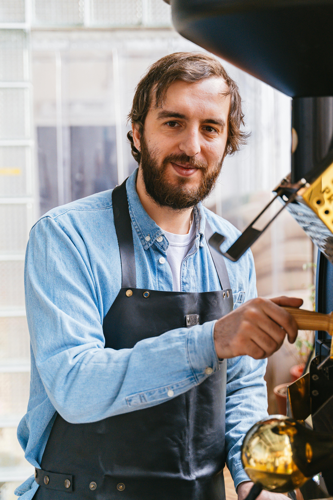
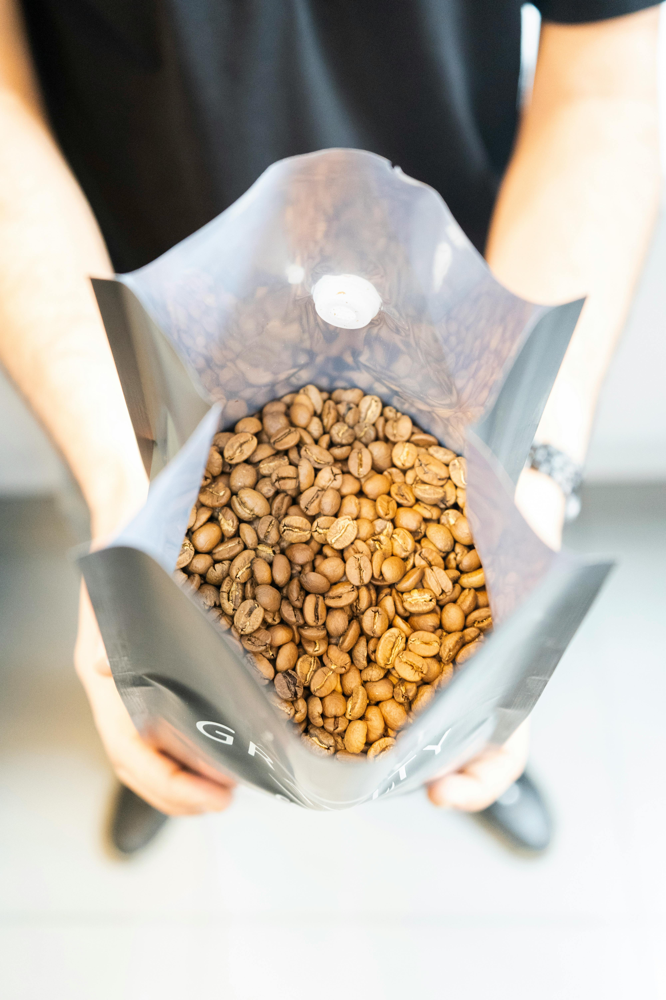

Empresas
Empresas
En nuestra consultoría, trabajamos con café de especialidad de la más alta calidad. Utilizamos granos de arabica cultivados en las mejores regiones productoras, como Colombia, Etiopía y Guatemala, conocidas por su clima ideal y condiciones perfectas para cultivar café de sabor único. Nuestro café es seleccionado cuidadosamente, garantizando que provenga de fincas sostenibles, donde se respeta tanto el medio ambiente como los procesos de cultivo.
Nuestro café es seleccionado cuidadosamente, garantizando que provenga de fincas sostenibles, donde se respeta tanto el medio ambiente como los procesos de cultivo.
Lo que nos distingue es que no solo seleccionamos los mejores granos, sino que también viajamos personalmente a las fincas de café más prestigiosas. Conocemos a los productores y trabajamos codo a codo con ellos para crear proyectos que valoren su labor. En colaboración, implementamos nuevas medidas en sus fincas para obtener micro lotes aún más excepcionales. Proporcionamos herramientas que mejoren sus procesos, siempre premiando la calidad sobre todo, y priorizando la sostenibilidad y trazabilidad en cada paso.
Este café de alta calidad ha sido seleccionado por su sabor suave y afrutado, con notas florales y dulces que lo hacen único.
En Barcelona, somos reconocidos por ofrecer uno de los mejores cafés de especialidad, no solo por la calidad de los granos, sino también por la manera en que los preparamos, lo que asegura una experiencia inolvidable en cada taza.
Quiero montar una cafeteria
Cómo montar una cafetería de especialidad puede ser algo emocionante y desafiante a la vez. Requiere una visión clara, una oferta de café de calidad y una operación eficiente. Para lograrlo, es fundamental contar con el apoyo adecuado en cada etapa del proceso. Aquí te dejamos los puntos clave que te ayudarán a conseguirlo:
Si tienes alguna duda o necesitas más información, contáctanos. ¡Estamos aquí para ayudarte!

Nuestro cafe
